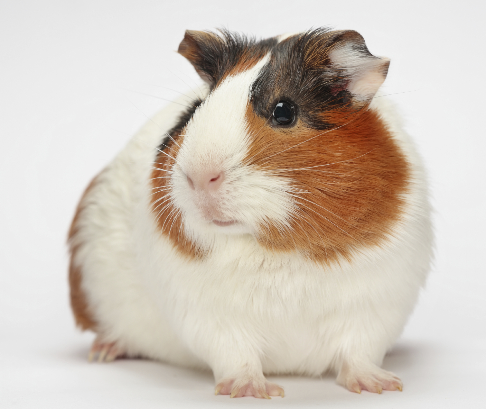

Head info
guinea pig, (Cavia porcellus), a domesticated species
of South American rodent belonging to the cavy family (Caviidae). It resembles other cavies in
having a robust body with short limbs, large head and eyes, and short ears. The feet have hairless
soles and short sharp claws. There are four toes on the forefeet and three on the hind feet. Several
breeds of domesticated guinea pigs exist, which are sometimes grouped by coat texture and hair
length. The term guinea pig is also used colloquially to refer to a person who serves as a test
subject in an experiment.
guinea pig (Cavia porcellus)
guinea pig (Cavia porcellus)Guinea pigs (Cavia porcellus) resemble other cavies in having a robust
body with short limbs, large head and eyes, and short ears. Guinea pigs weigh 500 to 1,500 grams
(roughly 1 to 3 pounds) and have a body length of 20 to 40 cm (8 to 16 inches).
Among rodents, domestic guinea pigs are fairly large, weighing 500 to 1,500 grams (roughly 1 to 3
pounds) and having a body 20 to 40 cm (8 to 16 inches) long. The tail is not visible externally.
There is a crest of longer hairs at the neck, but length and texture of the fur vary from smooth
(short or long) to coarse and short or long and silky. Coloration is extremely variable: the coat
may be white, cream, tan, reddish or chocolate brown, black, or a combined pattern.
Guinea pigs eat vegetation and do not require water to drink if supplied with sufficiently moist
food, but they must have water if fed dry commercial food. They breed all year in captivity. Females
bear up to 13 young per litter (4 is average); gestation takes 68 days. Although the young can
scamper about and eat solid food the day they are born, they are not fully weaned for about three
weeks. Females mature in two months, males in three, and captive guinea pigs live up to eight years,
although three to five is typical.
Lion (panthera leo)
Britannica Quiz
Deadliest Animals Quiz
coloration; guinea pigs
coloration; guinea pigsFive guinea pigs showing different inherited coloration.
No natural population of this species exists in the wild. Guinea pigs were apparently domesticated
more than 3,000 years ago in Peru, coinciding with humans’ transition from a nomadic to an
agricultural lifestyle. The Incas kept guinea pigs, and the animals were bred during the same period
by various people who lived along the Andes Mountains from northwestern Venezuela to central Chile.
These rodents remain a sustainable food source for the native peoples of Ecuador, Peru, and Bolivia,
who either keep them in their homes or allow them to scavenge freely both indoors and out. Guinea
pigs were taken to Europe in the 16th century, and since the 1800s they have been popular as pets.
They are also used internationally as laboratory animals for studies of anatomy, nutrition,
genetics, toxicology, pathology, serum development, and other research programs.
The origin of the colloquial name guinea pig is a subject of much debate. The first part of the name
may have been derived from the price of the animal in 16th- and 17th-century England—that is,
possibly one guinea—or it may have arisen from the animals’ being carried to European markets after
first being transferred to ships in ports in Guinea. The moniker could also have originated with a
mispronounced form of the word Guiana, the name of the region where some guinea pigs were collected.
Another possible etymology is from the name of the class of ships—the Guineamen—that transported the
animal. These were vessels that made port in West Africa as part of the transatlantic slave trade.
The second part of the name also originated with Europeans, who compared the squealing sound the
animal made (as well as the taste of its cooked flesh) to that of a pig.
There are five nondomesticated members of the genus Cavia that are also called guinea pigs: the
Brazilian guinea pig (C. aperea) found from Colombia, Venezuela, and the Guianas south to northern
Argentina; the shiny guinea pig (C. fulgida), inhabiting eastern Brazil; the montane guinea pig (C.
tschudii), ranging from Peru to northern Chile and northwestern Argentina; the greater guinea pig
(C. magna), occurring in southeastern Brazil and Uruguay; and the Moleques do Sul guinea pig (C.
intermedia), which is limited to an island in the Moleques do Sul archipelago off the southern coast
of Brazil. Breeding and molecular studies suggest that the domestic guinea pig was derived from one
of the wild Brazilian, shiny, or montane species.
History
Cavia porcellus is not found naturally in the wild;
it is likely descended from closely related species of cavies, such as C. aperea, C. fulgida,
and C. tschudii. These closely related species are still commonly found in various regions of
South America. Studies from 2007 to 2010 applying molecular markers, and morphometric
studies on the skull and skeletal morphology of current and mummified animals revealed the
ancestor to be most likely C. tschudii. Some species of cavy, identified in the 20th century as
C. anolaimae and C. guianae, may be domestic guinea pigs that have become feral by
reintroduction into the wild.
Regionally known as cuy (Spanish word derived from quechua quwi), the guinea pig was first
domesticated as early as 5000 BC for food by tribes in the Andean region of South America (the
present-day southern part of Colombia, Ecuador, Peru, and Bolivia), some thousands years
after the domestication of the South American camelids. The Moche people of ancient Peru
worshipped animals and often depicted the guinea pig in their art.
Early accounts from Spanish settlers state that guinea pigs were the preferred sacrificial
animal of the Inca people native to Peru. These claims are supported by archaeological digs
and transcribed Quechua mythology, providing evidence that sacrificial rituals involving
guinea pigs served many purposes in society such as appeasing the gods, accompanying the dead,
or reading the future.
From about 1200 to the Spanish conquest in 1532, the indigenous people used selective breeding
to develop many varieties of domestic guinea pigs, forming the basis for some modern domestic
breeds. They continue to be a food source in the region; many households in the Andean
highlands raise the animal.
c. 1580 painting of Elizabethan children with a cavy pet
In the early 1500s, Spanish, Dutch, and English traders took guinea pigs to Europe, where they
quickly became popular as exotic pets among the upper classes and royalty, including Queen
Elizabeth I. The earliest known written account of the guinea pig dates from 1547, in a
description of the animal from Santo Domingo. Because cavies are not native to Hispaniola, the
animal was believed to have been earlier introduced there by Spanish travelers. However,
based on more recent excavations on West Indian islands, the animal may have been introduced to
the Caribbean around 500 BC by ceramic-making horticulturalists from South America. It was
present in the Ostionoid period on Puerto Rico, for example, long before the advent of the
Spaniards.
The guinea pig was first described in the West in 1554 by the Swiss naturalist Conrad
Gessner. Its binomial scientific name was first used by Erxleben in 1777; it is an amalgam
of Pallas' generic designation (1766) and Linnaeus' specific conferral (1758).
The earliest-known European illustration of a domestic guinea pig is a painting (artist unknown)
in the collection of the National Portrait Gallery in London, dated to 1580, which shows a girl
in a typical Elizabethan dress holding a tortoise-shell guinea pig in her hands. She is flanked
by her two brothers, one of whom holds a pet bird. The picture dates from the same period as
the oldest recorded guinea pig remains in England, which are a partial cavy skeleton found at
Hill Hall, an Elizabethan manor house in Essex, and dated to around 1575.
Biology
Guinea pigs are relatively large for rodents. In pet breeds, adults typically weigh between
700 and 1,200 g (1.5 and 2.6 lb) and measure between 20 and 25 cm (8 and 10 in) in
length. Some livestock breeds weigh 3 kg (6.6 lb) when full grown. Pet breeds live
an average of four to five years but may live as long as eight years. According to
Guinness World Records, as of 2006, the longest-lived guinea pig was 14 years, 10 months,
and 2 weeks old. Most guinea pigs have fur, but one laboratory breed adopted by some pet
owners, the skinny pig, is mostly furless. In contrast, several breeds have long fur, such
as the Peruvian, the Silkie, and the Texel. They have four front teeth and small back teeth.
Their front teeth grow continuously, so guinea pigs chew on materials such as wood to wear
them down to prevent them from becoming too long. In the 1990s, a minority scientific
opinion emerged proposing that caviomorphs such as guinea pigs, chinchillas, and degus are
not actually rodents, and should be reclassified as a separate order of mammals (similar to
the rodent-like lagomorphs which includes rabbits and hares). Subsequent
research using wider sampling restored the consensus among mammalian biologists regarding
the current classification of rodents, including guinea pigs, as monophyletic.
Wild cavies are found on grassy plains and occupy an ecological niche similar to that of
cattle. They are social animals, living in the wild in small groups ("herds") that consist
of several females ("sows"), a male ("boar"), and their young ("pups" not "piglets," a break
with the preceding porcine nomenclature). Herds of animals move together, eating grass or
other vegetation, yet do not store food. While they do not burrow themselves or build
nests, they frequently seek shelter in the burrows of other animals, as well as in crevices
and tunnels formed by vegetation. They are crepuscular and tend to be most active during
dawn and dusk when it is harder for predators to spot them.
Male and female guinea pigs do not significantly differ in appearance apart from general
size. The position of the anus is very close to the genitals in both sexes. Sexing animals
at a young age must be done by someone trained in the differences. Female genitals are
distinguished by a Y-shaped configuration formed from a vulvar flap. While male genitals may
look similar, with the penis and anus forming a similar shape, the penis will protrude if
pressure is applied to the surrounding hair anterior to the genital region. The male's
testes may also be visible externally from scrotal swelling.